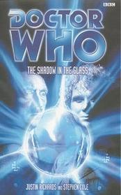

|
The Shadow in the Glass
|
BASIC PLOT DOCTOR COMPANIONS MATERIALISATION CIRCUIT By Pg 156, the TARDIS has materialized in the underground Cabinet War Rooms beneath 10, Downing Street, London, in 1944. Pg 197 Back in the Brigadier's house, April 2001 again. Pg 217 A hotel in (one assumes) Berlin, August 1942. Pg 225 Back to the Brigadier's again, in time for tea. Pg 239 Above Antartica, April 2001, and then... Pg 240 ...In the Redoubt, Antarctica, same time period. Pg 259 In the Fuhrerbunker, Berlin, April 30th, 1945. Pg 279 The TARDIS has returned to Turelhampton, April 2001. PREPARATORY READING CONTINUITY REFERENCES Pg 7 The title of the opening segment is 'Schwerpunkt', which has a variety of translations, mostly meaning 'main focus' or words to that effect. It also, interestingly, means 'burden'. Which may or may not have been deliberate. Pg 19 The Conspiracy Channel is one of the numerous digital channels that we have recently been inundated with in England (in the real world, it actually doesn't exist - although that may well be because of some sort of conspiracy, of course). Pg 39 "This is Claire Aldwych, single white female, 29 years old, feeling fifty, reporting from some Dorset shithole in the middle of the night for "So They Say" on the Conspiracy Channel. Cold. Fed up. Tired." There is footage of a famous British news reporter ending his report with 'Cold. Fed up. Tired.' and numerous other complaints while standing (I think) outside the Kremlin Pg 45 "Your secret history of the Nunton complex raised a few eyebrows, Miss Aldwych..." The Hand of Fear. "Take it away and do whatever your quasi-secret military organization does in situations like this and sort it all out." 'Quasi-secret' is about right for UNIT. The novelisation of Battlefield states that Doris found her beloved Alistair again as a result of a documentary about his and UNIT's activities (which, now I come to think about it, may well have been broadcast on the Conspiracy Channel). Not to mention the fact that Doctor Who itself during the Pertwee era tended to show UNIT HQ with a little sign outside proclaiming it as such. And The Paradise of Death makes it clear that UNIT's phone number is in the telephone book and helpful operators will give out top secret information at a moment's notice. Pg 46 "Palmer frowned at her. Claire decided he looked like an old Action Man." This is possibly a joke on the fact that Action Men were used to replace UNIT soldiers in the cross-sized shots in Robot. Pgs 50-51 "In the distance he could hear chanting - an old mantra. 'Ein Volk.' One that still made his flesh crawl. 'Ein Reich.' It would be easy to follow the sound to where the action was. 'Ein Fuhrer!'" This has echoes of Silver Nemesis, but is actually much, much better than it. Pg 56 "The girl - Claire, was it, Claire Aldwych? He was getting to be dreadful with names." The Brigadier is now fairly old (exactly how so depends on which novels you read - see the page on The King of Terror). Gloriously, his occasionally fading memory mentioned here gives marvellous scope for using that as a catch-all continuity plugger when he gets things wrong - see, once again, the page on The King of Terror. "His annoyance at having to cancel arrangements for his last day with Doris before her week away." We met Doris in Battlefield, having first heard about her in Planet of the Spiders. She conveniently doesn't appear in this novel, and appears never to be mentioned in conversation, thus avoiding the normal continuity errors which occur when the Doctor didn't know about her until his Seventh incarnation. Well done Cole and Richards! "Now he was just a happily married man living out his last days in a big house with a fine garden." We saw the Brigadier gardening at his fine, big house in Battlefield. The Doctor, presumably, doesn't ask the Brigadier how come he's got such a nice house, but, as we will see, the Doctor appears a little shell-shocked throughout this story. "Old Lethbridge-Stewart had retired from the fray, but he'd always known the monsters, the terrors, would never give up their designs on Earth." This is a very Paul Cornell-like phrase, particularly resonating with The Shadows of Avalon, which also features the Brigadier. Pg 57 "Remind me, were you with me at Devil's End? Mid-1970s?" The Daemons. Note the specific lack of a precise date to avoid buggering up UNIT dating even further. "'No sir, I was seconded to UNIT during...' He glanced anxiously at Claire in the corner. 'That time-bending business. With the Master.'" The Time Monster, and, sadly, see Continuity Cock-Ups. "Well, at Devil's End we came up against a little chap with wings a bit like that." The infamous 'chap with wings' line from The Daemons gets a rather silly name-check. Pg 59 "Brigadier Fernfather says he's fought his battles with Henderson." Brigadier Fernfather appears to be UNIT's fairly new CO, presumably replacing Bambera. He is, to the best of our knowledge, UNIT's fourth commanding officer (the previous incumbents being Lethbridge-Stewart, Colonel Crichton, and Bambera) Pg 61 The UNIT business card: "Does that put me through to your hush-hush messaging service?" It seems that UNIT has got rather more secure since the distant days of The Paradise of Death. Pg 62 "He pictured himself as a slim, fit young man with dark hair and neat moustache, dubiously taking ownership of the thing." The Brigadier is thinking about the Space-Time telegraph, which he's just about to fetch. He operated it sometime after Robot, summoning the Doctor back for Terror of the Zygons. He later didn't use it to summon the Doctor in The King of Terror, for no adequately explicable reason. "Now his hair was grey and smoothed back, his skin loosened and liver-spotted, the bristles of his thick moustache like fuse-wire. Wouldn't it be wonderful, he thought, if we didn't grow old. If we could all change into younger people and just go on living." The Brig is, of course, thinking about the Doctor but it's also what will later happen to the Brigadier in Happy Endings: he'll get younger again. I was worried that the authors were going to overdo this reference but, quite wonderfully, apart from one more very vague suggestion of a mention, this is the only time it gets referred to. Pg 63 "By the time the Brigadier had made it half-way down the stairs he could see that the battered, blue police box had come together in his hallway. 'Wonder which one I'll get,' he murmured happily." I don't know why, but somehow this last sentence somehow contrives to make the Brigadier appear as a burbling idiot, mumbling away incessantly to himself. It's one of the very few lines that doesn't feel comfortable. "'It's been a long time, Doctor,' the Brigadier said. 'I'm sure it will be,' agreed the Doctor." The Brigadier has met the Sixth Doctor much earlier in his life in Business Unusual, but, for the Doctor, that hasn't happened yet. (The audio The Spectre of Lanyon Moor also features the 'first' meeting of the Sixth Doctor and the Brigadier, but nothing here contradicts that one happening, although Business Unusual does.) Pgs 63-64 "'Travelling alone?' The Doctor's brash front seemed to slip for a second. 'Afraid so, yes.' Then the moment was gone." Depending on where you want to put this in the timeline, he could be referring to the recent departure of Evelyn Smythe (flashed back to in the audio Thicker Than Water), the departure of Grant Markham or even the apparent death of Peri in Mindwarp. I'd be tempted, by the Doctor's reaction, and indeed his very professional, uninvolved behaviour with the Brigadier throughout the novel (trying not to get too close to anyone), as well as his reactions and thought-processes after Claire's death, to put it fairly soon after Peri's 'death' in The Trial of a Time Lord. I can't tell if it was totally deliberate, but the Doctor is written almost as if suffering from post-traumatic stress. Pg 64 "'I've been briefed on the situation, Doctor... it's all rather unofficial I'm afraid -' 'Don't be afraid, Brigadier. I'm here now.' The Doctor smiled broadly." I mention it, because it's a lovely moment that captures the essence of the Sixth Doctor perfectly: simultaneously arrogant and caring. Pg 70 "The Brigadier only lived an hour or so away from Dorset." If this is the case, one is forced to wonder why, in Battlefield, he was helicoptered from his home to London and then back down to Cornwall. He presumably passed over his own house on the way back. Pg 72 "Fifty years may seem a long time to you but it's a handful of heartbeats to some races." The 'handful of heartbeats' phrase is a quote from Attack of the Cybermen. Pg 74 "After that business in Cornwall with the nuclear warhead." Battlefield. Pg 79 The Doctor states "I'll explain later," which was his annoying catchphrase in The Curse of Fatal Death. Pg 83 "Hanne nodded. 'We shall miss the old man,' she said quietly." She is referring to Martin Bormann, Hitler's erstwhile private secretary during the Second World War and, according to this book, still alive until 2001. In the real world, whilst conspiracy theorists suggest that Bormann may well have survived the war, the general consensus is that he committed suicide in Berlin a few days after Hitler himself died (analysis of the DNA of the skull of the body thought to be his matches that of an unnamed 83-year old relative). American talk-show host, David Emory, is one of those who believes Bormann did survive. This and a number of Emory's other theories seem to have, at least partially, informed the plotting of this novel. Pg 93 "Arzamas-16 was the Soviets' own Turelhampton from 1946 to 1996, a closed city that literally disappeared from Russian maps, its location a state secret." This is almost true, but given that it became a sister city to Los Alamos, New Mexico in 1993, it seems unlikely that, in the real world, the secrecy was kept for quite that long. Also, in the real world, the city's name was changed (back) to Sarov in 1995, although it's possible that Henderson may not actually know that. Pg 98 "He felt like he'd been yomping for miles with full kit through muddy terrain." Yomping was one of John Nathan-Turner's hobbies, and it gets occasional mentions in the books. It's basically intensive back-packing round the countryside. Pg 99 "'Old habits die hard?' the Doctor said softly, climbing into the passenger seat. 'Like old soldiers,' replied the Brigadier, 'they don't die at all.'" This is a passing reference to the Brigadier's line in Battlefield, where he states that he's decided to 'fade away', as well as being a very passing forward reference, possibly, to Happy Endings. Again, note the Doctor's quiet, sympathetic, world-weary tone. He's very tired, somehow, here. That may be irrelevant in Henderson's remembering of it. Pg 101 "I helped old Yablokov, counsellor to the Russian President, investigate their whereabouts." The Doctor is referring to Portable Nuclear Devices. His meeting with Vitaly Yablokov, scientific advisor to Boris Yeltsin, is an unrecorded adventure. Pg 103 "Heavens to Betsy, I'm a good driver." The Doctor uses this somewhat old-fashioned phrase in Episode Six of The Talons of Weng-Chiang, when he's taunting Greel. Pg 110 "And out of the darkness, the Fuhrer's voice, level and confident. 'The sign is made. The time is now. The Fourth Reich is upon us.'" It still sounds like Silver Nemesis, and it's still much better than that story was. Pg 114 "She felt instinctively there was... a kind of sorrow about him." In the midst of one of the best prose descriptions of the Sixth Doctor ever, the reference to sorrow again suggests that he's only recently lost someone close to him, to whit: Peri. Pgs 114-115 "She looked between him and the Doctor, who had already consumed the two biscuits remaining on the plate and who was coyly eyeing the half-eaten custard cream." The Sixth Doctor, as he does in so many books, appears to enjoy filling his face. Whilst this is never backed up on screen, it's now happened in so many books that it clearly is one of his character traits. Pg 116 "'Young lady, have you heard of Sarah Jane Smith?' 'The Metropolitan woman?' Claire nodded. 'She's done some amazing stuff. You know her?' 'Oh, to nod to in the street.'" Cute reference to Sarah Jane, although according to the recent audios, she's better known for the work she did with Planet 3 more recently. Presumably Claire knows her older work. Pg 121 "Linda gave a brittle laugh. 'He used to joke that if he ever told me, he'd have to kill me.'" This is the tagline from the Doctor Who: Unbound audio story Full Fathom Five, although that was released two years after this novel. To be fair, it's a fairly well-used phrase. Pg 151 "'You think we should go to Russia?' This was more than she had bargained for. 'I have a few contacts over there from... the old days. Did a couple of joint missions actually. Rather hush-hush.'" One of these, at least, would be in The Devil Goblins from Neptune. Pg 157 "He wasn't even surprised that the man looked just the same as when last they'd met, back when the King had abdicated, fully eight years ago." This is even footnoted in the book itself as having happened in Players, so I don't need to tell you, really. "Though I trust your arrival won't herald a further appearance from that troublesome countess." Players again. Pg 160 "'In a Halifax?' The Doctor gleefully rubbed his hands together. 'A mark VII? Splendid, I've not been up in one of those...' he checked the clock. '... until next March'" An unrecorded adventure, I think. Pg 167 "Major Johann Schmidt, of the Fifth Medical Corps here in Berlin, if I remember correctly." The Doctor has, once again, assumed the 'John Smith' pseudonym that he first wore in The Wheel in Space. Pg 168 "Lethbridge-Stewart found himself experiencing a healthy dash of deja vu when he got off the plane at Moscow airport." His previous visits to Russia have included at least the one in The Devil Goblins from Neptune. Pg 177 The Doctor in disguise: "He enjoyed wearing the eyepatch" is almost undoubtedly a reference to the Brigadier's alter ego's similar eye-wear in Inferno, and the tale of many a convention since then. Pg 178 "Himmler blinked. 'The Fuhrer thinks very highly of you,' he said slowly, making it clear that he would not otherwise countenance such a quip. The Doctor frowned. He had not been expecting that. Had Hitler himself seen the records?" At first glance, this would appear to be a reference to Timewyrm: Exodus, but, as later events transpire, it's because the Doctor meets an earlier version of Hitler later on in the book and has nothing to do with Timewyrm: Exodus at all. This means, incidentally, that Hitler knows two different incarnations of the Doctor: the Seventh (whom he knew as Doktor Johann Schmidt) and the Sixth (whom he knew as Major Johann Schmidt), both of whom prefer to be known as the Doctor. Isn't it convenient that the first time the Doctor met him, he decided to be referred to as 'Major' rather than the more obvious 'Doctor'? Still, the two incarnations do look rather different, I suppose, so presumably Hitler never made the obvious connection. Pg 179 "'Did you know that just a few miles...' He paused and swung in his seat searching for the direction he wanted. '...That way,' he decided, 'Arminius battled the Romans?' He turned back to face Himmler. 'But of course you did. I imagine that is partly why you chose this place.' He shook his head as he remembered. 'So many died that day,' he said sadly." The Doctor's experiences with Arminius (unless he's referring to the fact that he knows about it rather than having experienced it himself) remain an unrecorded adventure. Pg 181 The Doctor briefly considers his past incarnations: "The tall one with the teeth and the dark mass of curly hair would have been up for it, he reckoned. But the ruffle-shirted toff with the big nose would have had a fit at the merest suggestion." The fourth and third Doctors, respectively. The Sixth Doctor considers himself to be more pragmatic and more experienced now. Pg 187 "'They'll leave it to myself and the Doctor to sort things out.' He emphasized 'the Doctor', and she sensed that this might actually carry even more weight than the Brigadier's own standing in Russia." He's well-known everywhere, of course, but probably the Doctor's most noted Russian adventures were in The Devil Goblins from Neptune and, unbeknownst to everyone at the time, the amnesiac Eighth's time there in Endgame. Pg 191 "'You know what you're looking for?' the Doctor asked Voss in faultless German." Of course he's speaking faultless German; he could hardly have managed in Berlin for a month if he couldn't, now could he? That said, he didn't appear to know any in The War Games, although I'm increasingly thinking that that was a bluff on the Doctor's part. This section of the book, by the by, as the Germans arrive on British soil during the Second World War in order to steal something from a British army base, is very like The Curse of Fenric. Pg 205 "'How will you finish your quest,' he said calmly, 'with your brains spread all over this room?'" And similarly, as the Brigadier threatens someone at gunpoint, one is reminded of the moment in Battlefield, when he's got a gun pointing at Mordred: 'Ware this man, my son,' says Mordred's mother, 'He is steeped in blood.' It's a nice resonance. Pg 217 "But the Brigadier was hardly listening. 'Doctor,' he said after a few moments, his face a mask of surprise. 'I don't speak German. At least, a smattering, but not that well. And yet...' The Doctor grinned at him. 'Must be the champagne,' he said." It's not - it's the TARDIS telepathic circuits, first mentioned in The Masque of Mandragora and relevant in the new series episode The End of the World. Pg 219 "There was a half-eaten sausage roll left on it, and a smear of pickle that looked suspiciously as though it had been somehow crafted into a question mark, with the remains of the sausage roll as the dot." The question mark symbol appeared on the clothing of Doctors 5, 6 and 7. Pg 232 "His [The Doctor's] brandy was long gone - lost in a single gigantic gulp. It appeared to have had no effect whatsoever." Grave Matter makes it clear that the Doctor can decide whether or not to metabolise alcohol. "'No don't tell me, you learned Russian years ago so as to read Tolstoy in the original,' the Brigadier said, voice dripping with sarcasm. 'Don't be absurd,' the Doctor said as he looked through the photocopied pages. 'It was Checkov.'" The Doctor's presumably learned a huge variety of languages over time, possibly during his third incarnation, given his abilities in The Mind of Evil. Pg 279 The title of this final chapter, Waffenstillstand, translates as 'Armistice'. Pg 280 "The Doctor just stared into the heat-haze, felt the energies crackling in front of his face. How many times had he tempted fate, cheated death? 'Doctor?' There was no sense agonizing over what he should and shouldn't do, he'd thought 'Doctor, is everything all right now?' But when it went wrong... when he warred with Time and others were caught in the crossfire... There was a simple elegance to the way it responded to such stimulus The Doctor closed his eyes, felt fierce heat on his skin. Thought of Claire, her body charred black, long ago." It's not direct continuity, but this feels like the Doctor deciding that he's not going to risk people's lives again (particularly if you take this story to be set soon after Peri has been 'killed'). He'd clearly be thinking of Peri again as well as Claire at this point. This may be why he then refused to continue to 'play the game' and risk more lives, and may well be why the Seventh Doctor would later say, in The Room With No Doors, that his previous incarnation did "Nothing. That was the problem. He was afraid, afraid of going power mad. He was so scared of what he might become that he wouldn't do what needed to be done. He refused to plan, refused to anticipate. He'd never consider a pre-emptive strike against evil because he was too scared of even being capable of planning one. People were dying because I didn't know what I was doing. So I had to make a change." (Pg 158 of The Room With No Doors.) If this is the case, then this is one of the most subtle, yet most powerful, leads into the New Adventures that we have ever seen. It's also really nice writing. Pg 282 "He would find somewhere closer to the sea, watch it rise and fall, feel the salt spray on his skin, perhaps. Breathe clean air again. He would do that soon." This may well be a lead-in to Business Unusual, but, given the vastly different styles of the Sixth Doctor's character between those two books, I don't think that it is. OLD FRIENDS AND OLD ENEMIES Captain Palmer appears early on (page 45), still working with UNIT. He was seen (as a corporal) in a number of third Doctor stories, such as The Three Doctors. Various Nazis who have appeared in cameos in various novels go on to appear here, including Heinrich Himmler, Martin Bormann and Adolf Hitler himself. All three end the novel dead. Winston Churchill makes another welcome appearance. NEW FRIENDS AND NEW ENEMIES Flight Lieutenant Carl Smithson; Neddy, his commanding officer; Wing Commander Arnold; Mary (later Smithson). Professor Lindemann, also known as Lord Cherwell (he was Baron Cherwell at this point, and would be raised to Viscount Cherwell in 1956); Air-Marshall Anthony Forbes-Bennett; a General in Churchill's army. Captain Voss; Kelner; Horst. In 1945 in Berlin: Ilya Petrova; Vlad the Mongolian. Eve Braun, who survives at this point. In 2001: Seven Tibetans, including Renchon, their leader; Jeremy Maskell; Klaus Venkell; Gottried; Krenz; Hartmut; Schenk, amidst a variety of other fairly comedic Nazis in the Redoubt. Simon, Claire's crew; Sergeants Hansing and Yeowell of UNIT; Linda Goldman; 'Freddo' the archivist. Corporal Jessop and Sergeant Dow, as well as numerous Privates guarding Turelhampton. Irina Kobulov. In France, around D-Day: Gunther Brun; Colonel Otto Klein.
CONTINUITY COCK-UPS PLUGGING THE HOLES [Fan-wank theorizing of how to fix continuity cock-ups] FEATURED ALIEN RACES FEATURED LOCATIONS Pg 7 An airfield near Trowhaven Base, May 17th 1944 Pg 9 Above the English Channel and the South Coast of England, same time period Pg 11 The village of Turelhampton, in England, same time period. While Turelhampton is fictional, much the same thing as happened to it (evacuated by the army and never repopulated) as really did happen to the Dorset village of Tyneham in November 1943, as the authors state in their note at the end of the novel. Pg 14 Berlin, as the Russians are invading it, in April 1945, including Tempelhof Airport and the Zitadelle. Pg 19 The second chapter is a section of a television documentary broadcast on August 12th 1997 in England, but actually discussing the occurrences in the Fuhrerbunker between April 15th and April 30th, 1945. Pg 26 Somewhere, presumably near Turelhampton, certainly on the South Coast of England, sometime in 1955. Pg 33 The Redoubt, a secret Nazi base hidden underneath Antarctica and cunningly fashioned into the shape of a Swastika, early April, 2001. Pg 39 Turelhampton, April, 2001. Pg 43 The Ministry of Defence buildings, same time period. Pg 44 Claire Aldwych's flat Pg 48 Truro, Cornwall and environs, including Maskell's House, Oakhope Manor, well off the beaten track, same time period. Pg 56 UNIT HQ, although it's not clear exactly where that is at the moment. Pg 60 Off the A39, near Oakhope Manor, itself near Kilkhampton. Pg 61 The Brigadier's (and Doris's) house. Pg 70 The next few pages have the Doctor and the Brigadier at all sorts of locations in South England as they drive down to Dorset. These include a road near Wareham, eventually ending up in Turelhampton. Pg 77 Inside the Vvormak ship, in Turelhampton. Pg 94 Back to Oakhope Manor Pg 119 Lewisham, in Outer London (and, incidentally, where I grew up) Pg 126 Henderson's safehouse, somewhere. Pg 127 Peter Spinney's home in Winterbourne Dauntsey, near Salisbury. Pg 136 Normandy, France, around D-Day (June 6th, 1944) Pg 139 Himmler's residence, Berlin, a few weeks later. Pg 142 The Ministry of Defence, England, April 2001 again Pg 156 The Cabinet War Rooms, beneath London, July 1944. Pg 160 Over France, same time period. Pg 161 The Reichschancellory, same time period. Pg 168 Moscow, including the airport and the State Special Trophy Archive, back in April 2001. Pg 177 The Doctor has spent almost a month in Berlin. He works, for some of that time, at the Fifth Medical Corps headquarters in Friedrichstrasse. Pg 178 Wewelsburg, Himmler's castle in Westphalia Pg 180 Southern Ireland, from where the Doctor will make his way back to Turelhampton. Pg 181 Turelhampton, August 18th, 1944, around 11pm. Pg 197 Back in the Brigadier's house, April 2001 again Pg 202 Peter Spinney's house again. Pg 217 A hotel, presumably in Berlin, August 1942 Pg 225 Back in the Brigadier's house, April 2001 Pg 226 Back in the Redoubt, in April 2001 Pg 259 The Fuhrerbunker, Berlin, April 30th, 1945 Pg 279 Back in Turelhampton, April 2001 IN SUMMARY - Anthony Wilson |
|
 |